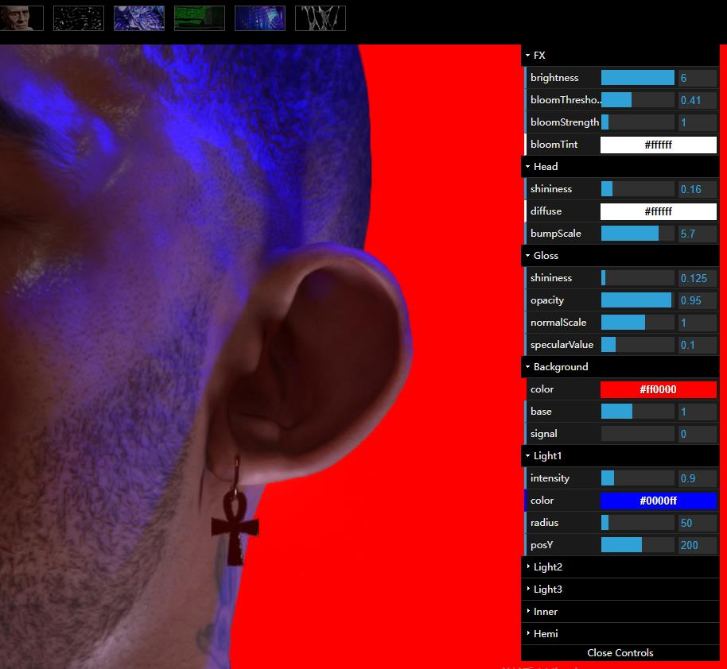
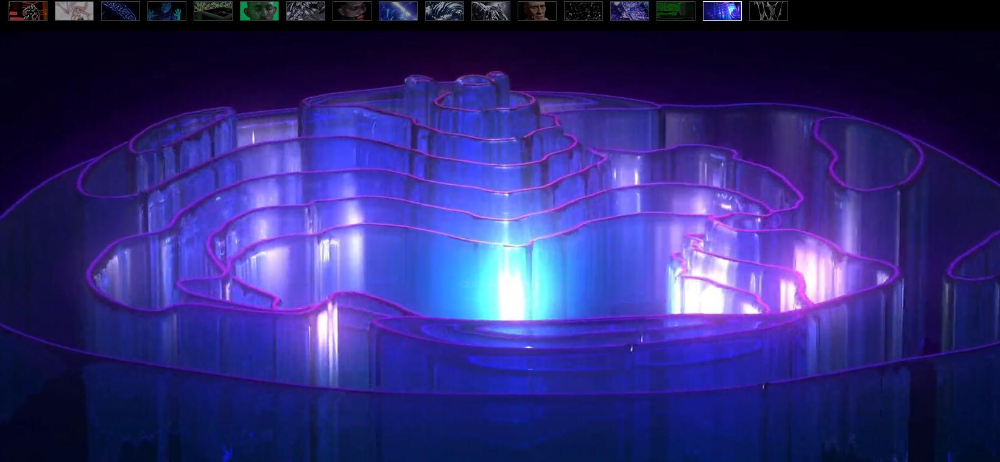
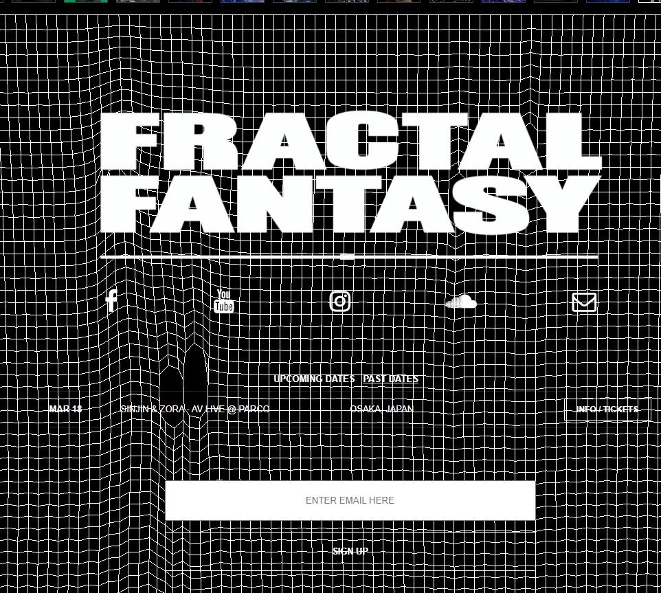
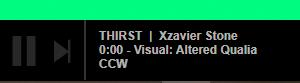
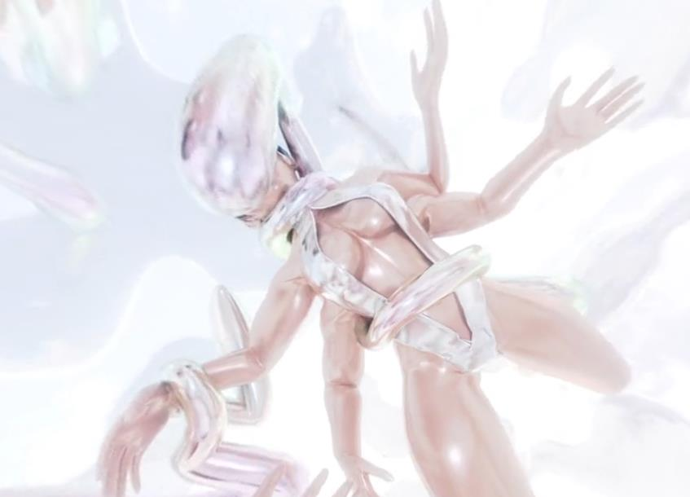
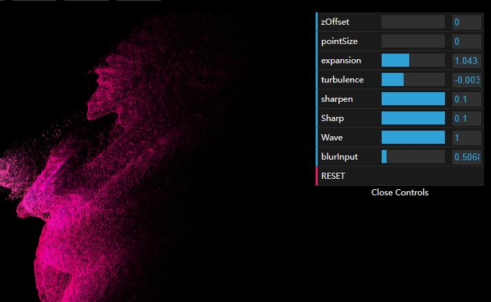

The first thing that would catch my attention would be the visual design and animation of the website, particularly the background with its colourful and intricate fractal patterns. I might also notice the menu and various buttons on the page, such as the "control" button, which could guide me towards exploring the website further.
| Actions | Reaction | Time |
|---|---|---|
| drag | interactive with website | 30 secs |
| open control | adjust parameter values to see results | 10 scs |
| click everywhere | try to find introdcution of website | 20 secs |
| check "tour" page | access different sections of the site | 10 secs |
| back to interactive page | try different effects | 20 secs |
| final view | enjoy different effects & links to related content | 30 secs |
The part of the experience I spend the most time engaging are twice, with depends on each time my different interests and goals. For example, first time I spent the most time exploring the various fractal animations and designs on the website, clicking on different images to see how they change and interact with each other. Second time, I was more interested in searching about the artists and thus spend more time reading the artist's statement or clicking on links to related content. The part of the experience I spend the most time engaging with interactive and final view.
I spend some time exploring the background animations and clicking on other buttons such as the different effect button and drag mouse to try interact with the website.
my impression is that the intended primary goal of the interactive experience is to showcase the artist's intricate and visually striking fractal designs, as well as to provide an immersive and engaging environment for users to explore and appreciate these designs. The website features a wide range of fractal animations and designs, each of which is highly detailed and intricate. The use of bright colours and special movements creates a sense of energy and movement throughout the website, which is intended to draw the user's attention and encourage them to explore further. Also the website features various interactive elements, such as the ability to click on different images and animations to see how they change and interact with each other. These interactive are designed to create a more engaging and immersive experience for the user, and to allow them to appreciate the creativity and beauty of designs in a more interactive way. The primary goal of the interactive experience is to showcase the artist's talent and creativity, as well as to provide beautiful visually environment for users to explore.
I think the interactive experience on this website effectively communicates its primary goal of showcasing the artist's intricate and visually stunning fractal designs, as well as providing an engaging and immersive environment for users to explore and appreciate these designs. One way that the website communicates its primary goal is through its visual design and animation. And the website features various interactive elements that allow users to explore the designs in a more engaging and immersive way. Users can click on different images and animations to see how they change and interact with each other, which encourages exploration and experimentation with the artwork. Also the website includes a tour menu page that allows users to easily access different sections of the site, such as the info and ticket or the artist's youtube. This helps to communicate the artist's primary goal of showcasing their work and providing users with a comprehensive experience.
The experience can be interacted with different time, depends on the user's interests and goals. I might spend hours exploring the various animations and designs, but some users might spend only a few minutes browsing the website. Because the website includes various interactive elements that encourage exploration and experimentation with the artwork, I may find its playful to revisit the website multiple times. Each time i returns to the website, I can discover new details or patterns within the designs. i was excited When i found some new designs. So the interactive experience on this website is designed to be explored and appreciated over time, and users can interact with it for varying amounts of time depending on their intersets, mood and needs.
I feel this website is designed to be explored and appreciated at the user's own pace, and there is no prescribed way in which the user should interact with the artwork. The interactive elements on the website, such as the ability to click on different images and animations to see how they change and interact with each other, encourage exploration and experimentation with the artwork. But the website does not provide any specific guidance on how long or how many times users should interact with the artwork. Instead, it leaves it up to the user to decide how much time they want to spend exploring the artwork and how many times they want to return to the website.
One of the references is to fractal geometry, which is a concept used to create the intricate patterns and designs featured on the website. The website showcases various fractal designs, animations, and simulations, which reference the mathematical foundations of fractal geometry. The website also references other forms of digital media, such as music videos and video games, through its use of dynamic and interactive animations. I can click on different images and animations to see how they change and interact with each other, which creates a sense of interactivity and engagement similar to that found in video games or music videos. Then the website references non-digital forms of art and design, such as abstract art and psychedelic art. The intricate patterns and bright colours featured on the website draw inspiration from these art forms, creating a visually stunning and engaging experience for users. It references a variety of media forms, both digital and non-digital, which combine to create a unique and visually striking experiences.
  For example, users can focus on the intricate patterns and designs in the artwork, or they can experiment with the interactive elements of the website to create new animations and patterns. Also, the references to digital media such as video games and music videos suggest that users should engage with the interactive experience and help to enhance spatial immersion. Users can click on different elements of the artwork to see how they react and interact with each other, which creates a sense of engagement and interactivity similar to that found in video games or music videos. Users should have an open mind for interactive experience experimentation, which can lead to a deeper appreciation and understanding of the artwork.
Just one word: Enjoy! Users should feel a sense of wonder, exploration, and playfulness when engaging with the interactive experience. To feel a sense of wonder, playfulness, and interactivity. But if possible, I recommended that the website can make a step-by-step guide tutorial for each function, and guide users step by step to discover deeper appreciation. Otherwise, many users do not know how to use and explore at the beginning, and the clueless process will be reduced their patience, that may leads to a reduction in usage time.
One of the most frustrating elements of the interaction should be the lack of clear instructions or guidance on how to navigate the website and its various features. I talked to my classmate, she thinks she feeling overwhelmed or confused by the intricate patterns and designs on the website, which can make it difficult to know where to click or how to interact with the artwork.
The most satisfying elements can be the immersive and visually stunning artwork and the sense of immersion. The vibrant colours and cyberpunk style can also be visually pleasing and engaging for users. And the interactive elements of the website, such as the ability to click on different elements to create new animations and patterns, can be satisfying and rewarding for users. This sense of control over the artwork can create a sense of engagement and interactivity that can be both stimulating and enjoyable.